제1장 · 뿌리
1946— 1961
이상휘 장로와 마흔다섯 성도
해방 이듬해, 이리 고현교회의 이상휘 장로와 성도 마흔다섯 명이 분립을 청원했습니다. 1946년 6월 2일 오후 1시, 신흥동 YMCA 회관에서 이리신광교회의 첫 예배가 드려졌습니다.
창인동 시절의 석조 예배당 · 80주년 기념영상 중에서
이리신광교회 창립 80주년 · 1946—2026
00 인사
지난 80년의 세월은 에벤에셀(여기까지 도우셨다) 하나님의 전적인 은혜였습니다. 이제 미래 100년을 바라보면서 선교적 교회로 도약하고자 합니다.
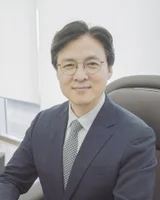
권오국 목사제7대 담임목사 · 교회 홈페이지 인사말에서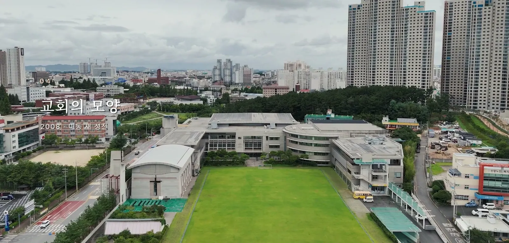
80주년 기념영상5분 39초01 80년의 이야기
천천히 내려가며 한 시대씩 걸어 보세요. 날짜와 수치는 이리신광교회 공식 연혁을 따랐고, 따옴표 안의 말은 80주년 기념 다큐멘터리 인터뷰에서 옮겼습니다. 시대마다 자세한 연혁은 펼쳐 볼 수 있습니다.
1946— 1961
해방 이듬해, 이리 고현교회의 이상휘 장로와 성도 마흔다섯 명이 분립을 청원했습니다. 1946년 6월 2일 오후 1시, 신흥동 YMCA 회관에서 이리신광교회의 첫 예배가 드려졌습니다.
창인동 시절의 석조 예배당 · 80주년 기념영상 중에서
교회를 세운 이상휘 장로의 가문은 순교의 신앙을 품고 있습니다. 동생 이상태 안수집사는 신사참배를 거부하다 서대문형무소에 수감되었고, 1943년 옥중에서 세상을 떠났다고 가문은 전합니다.
출처: 본헤럴드 기사, 이상휘 장로 아들 이대희 목사의 기록1961— 1993
제4대 안경운 목사는 1993년 소천할 때까지 31년 넘게 교회를 섬겼습니다. 이리역 폭발의 상처 위에서 예배당을 다시 세웠고, 1982년 대한예수교장로회(통합) 총회장으로 섬겼습니다.
“장로님, 저는 신광교회의 머슴입니다. 머슴이 나가서 번 돈은 주인 것 아닙니까?”
만우 안경운 목사(1961–1993 시무)
“죽어도 하나님 성전에서 죽는 게 복이다. 가다가 죽을 판인데 어딜 가. 가만히 있어라.”
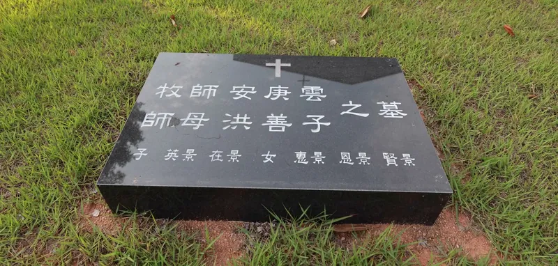
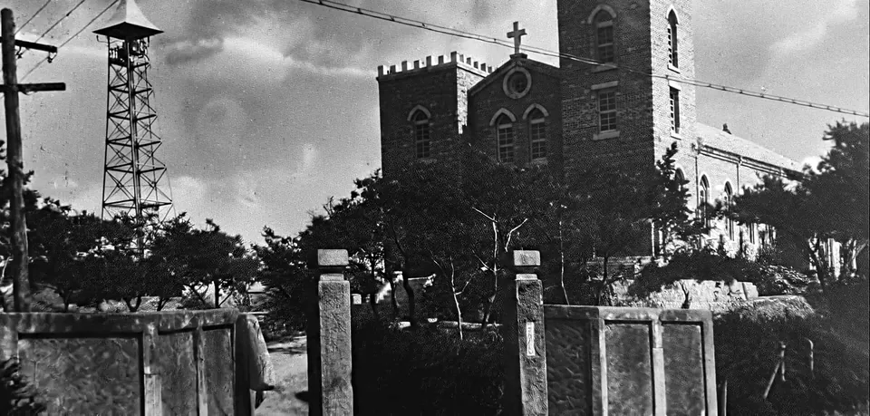
1993— 2008
목자를 갑자기 잃은 슬픔 속에서도 교회는 흔들리지 않았습니다. 양로시설 신광의 집과 노인종합복지관, 요양원이 차례로 문을 열었고, 희년을 맞아 새 교회를 개척했습니다.
“앞으로도 안 목사님이 안 계신 신광교회는 없을 거예요. 저는 그렇게 생각합니다.”
신광의 집 경내 만우기념예배당 · 2000년 봉헌
2008— 2021
2008년 10월 5일, 교회는 마동 새 성전에 입당했습니다. 종탑 대신 체육관과 잔디 운동장을, 첨탑 대신 카페와 도서관을 세웠습니다. 누구나 문턱 없이 들어올 수 있는 교회를 꿈꾼 결과입니다.
“이 교회를 지으면서 생각한 건 ‘교회 같지 않은 교회, 누구나 올 수 있는 교회, 믿지 않는 사람들이 좋아하는 교회’였어요.”
주일의 마동 성전 로비
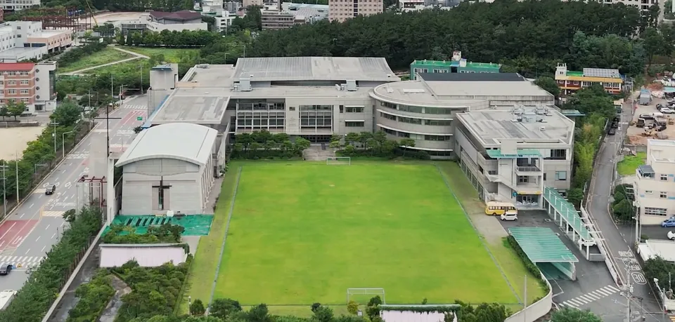
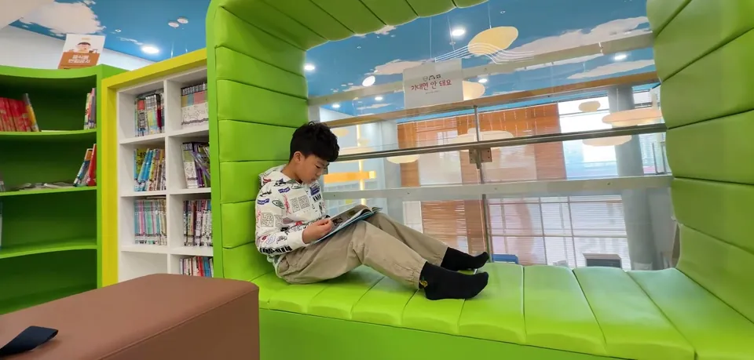
2022— 2026
제7대 권오국 목사와 함께 교회는 목장교회로의 전환을 결단했습니다. 주일이 지나면 거실마다 작은 예배가 열립니다. 밥을 나누고 삶을 나누는 목장이 곧 교회입니다.
“‘교회’라는 말이 예전에는 무겁게 느껴졌는데, 이제는 따뜻한 말로 바뀌었어요.”
한 가정의 거실에서 열리는 목장 모임
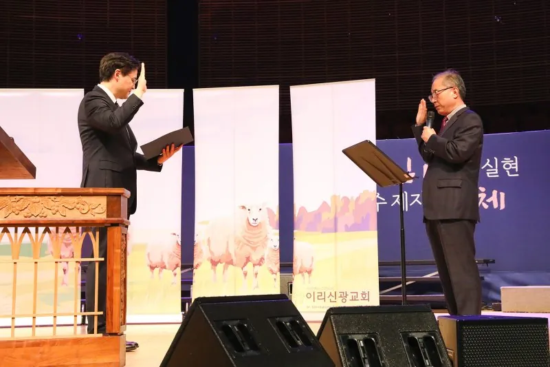
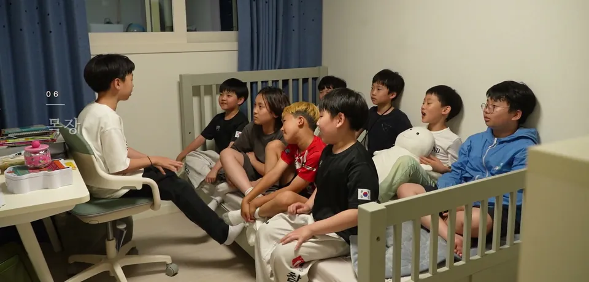
02 목자들
임시 목회자 권우진 목사와 함께 첫 예배를 드린 교회는 일곱 명의 담임목사와 함께 여든 해를 걸어왔습니다.
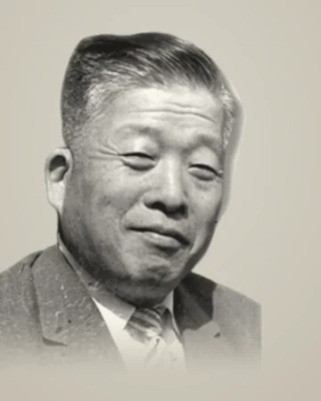
1947 — 1951
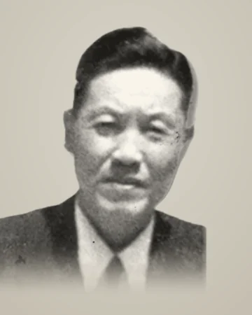
1952 — 1954
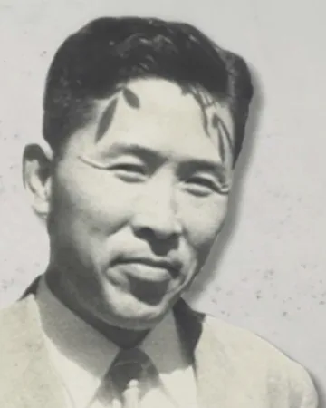
1954 — 1961
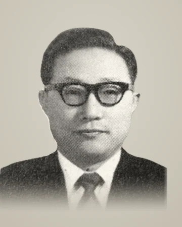
1961 — 1993
호 만우 · 제67회 총회장
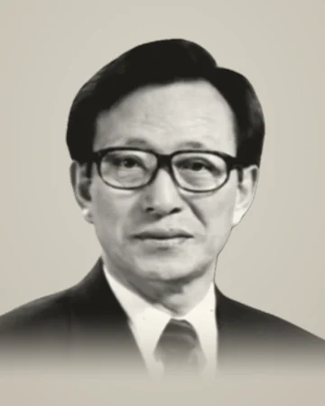
1994 — 2000
2001 — 2021
은퇴목사
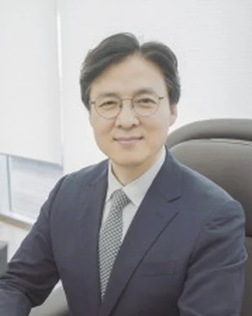
2022 —
현 담임목사
“전임 장덕순 목사님께서 교회를 혁신적으로, 또 문화적으로 변화시키면서 교회에 유연함이 생겼고, 오랜 세월 쌓인 영성과 조화를 이루는 건강한 교회라는 생각을 갖게 되었습니다.”
권오국 담임목사
시무 기간은 교회 연혁의 부임·사임 기록을 따랐습니다. 제6대 장덕순 목사의 시무 기간은 신광교회신문 제237호(2026. 6. 7.) 표기를 따랐습니다.
03 성도들의 고백
1960년부터 교회를 지켜 온 장로와 권사, 이리역 폭발의 밤을 사택에서 견딘 집사, 동네를 달리며 교회의 문턱을 낮추는 집사, 그리고 청년. 80주년 기념 다큐멘터리를 위해 여덟 분의 성도가 자신의 교회를 이야기했습니다.
카드를 누르면 인터뷰를 더 읽고, 다큐멘터리 속 본인의 목소리로 들을 수 있습니다. 인용은 다큐멘터리 자막 원고를 따랐습니다.
04 기념 다큐멘터리
80주년 기념영상의 이야기에 권오국 담임목사와 성도 여덟 분의 인터뷰를 더해 새로 엮은 확장판입니다. 장 제목을 누르면 그 장면부터 재생됩니다.
 은혜 80년, 선교 100년 · 확장판기념 다큐멘터리 · 아홉 개의 장
은혜 80년, 선교 100년 · 확장판기념 다큐멘터리 · 아홉 개의 장
05 80주년 기념주일
창립 80주년 기념주일 2부 예배 실황입니다. 아래 순서를 누르면 해당 장면부터 재생됩니다.
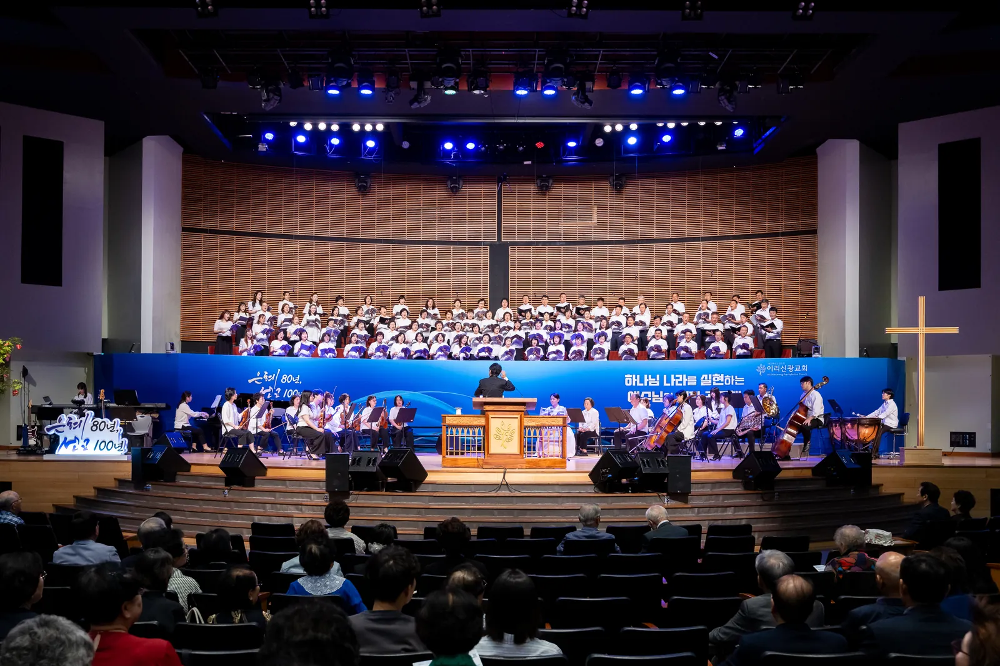
창립 80주년 기념주일 2부 예배실황 1시간 31분 · 이리신광교회 유튜브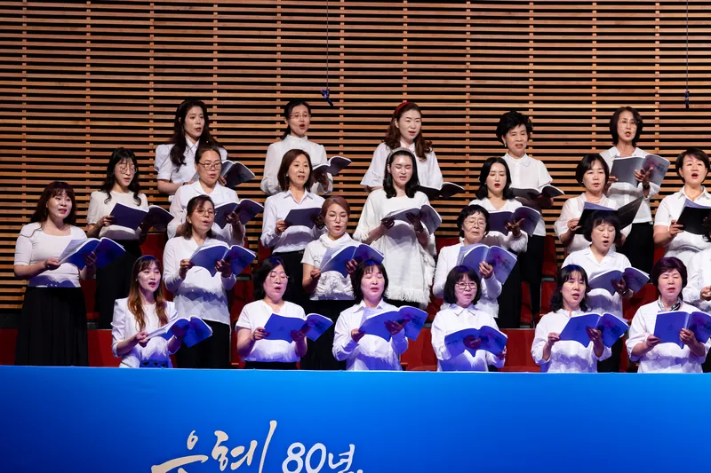
2026. 6. 7. · 4분 47초
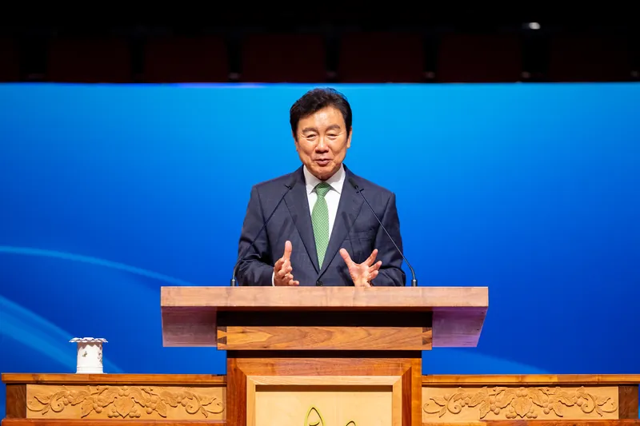
기념주일 2부 설교 · 20분 40초
사진 · CTS전북방송
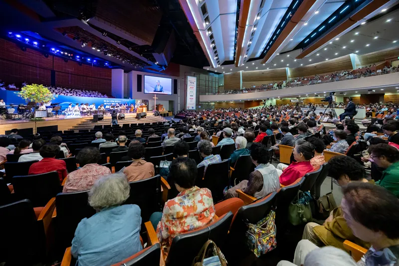
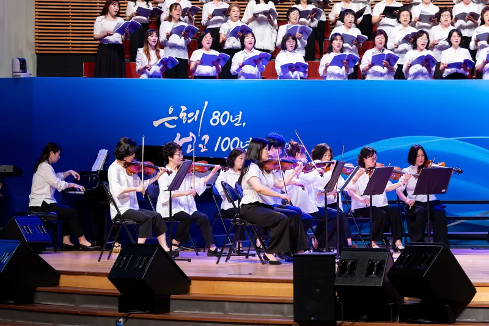
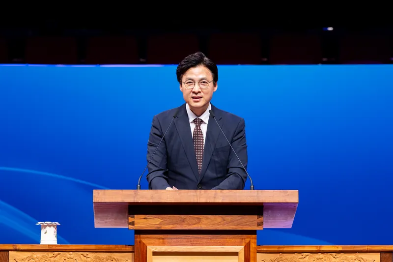
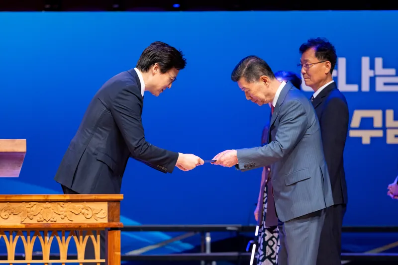
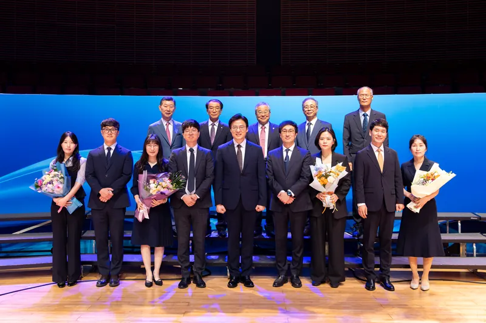
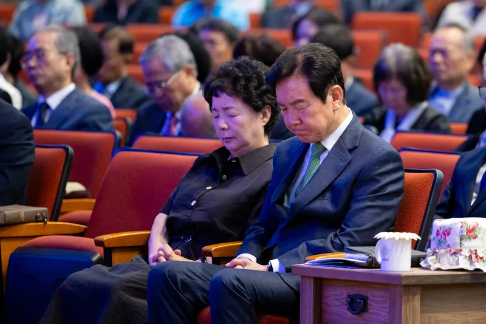
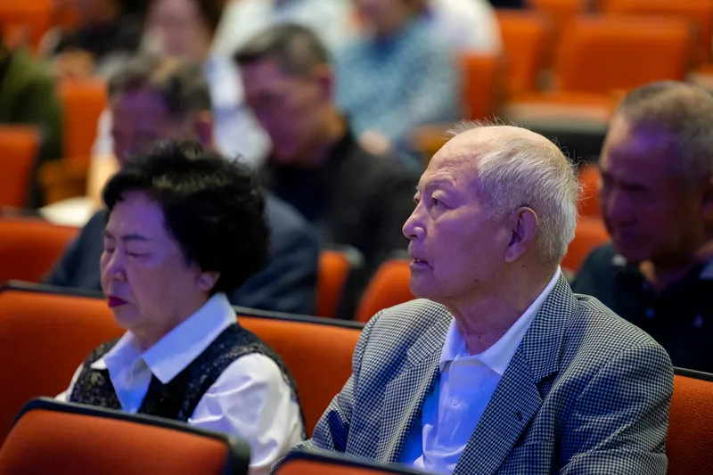
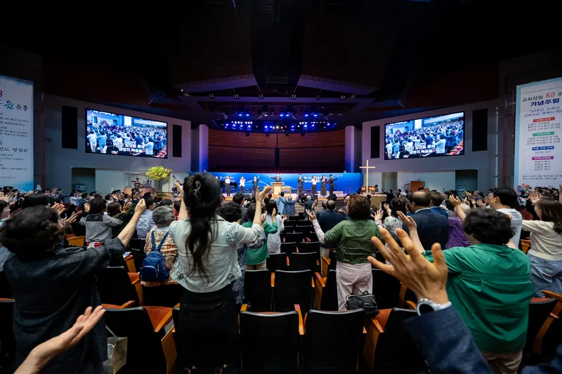
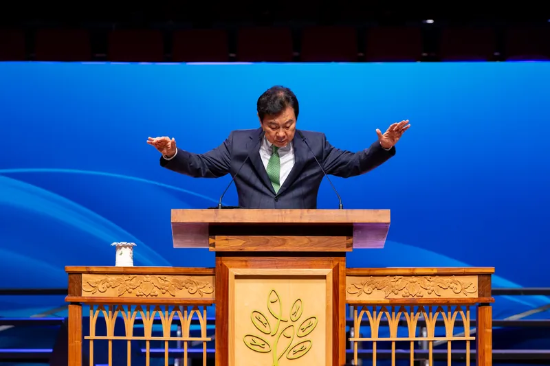
06 다음 세대에게
1950년 신광유치원을 연 교회는 지금도 아기부터 청년까지 한 지붕 아래에서 키워 냅니다. 창립 100주년을 맞을 2046년, 이 교회의 주인공은 지금의 아이들입니다.
아기부터 청년까지, 한 교회에서 자라는 길 옆으로 넘겨 보기 →
아기와 보호자가 함께 드리는 첫 예배
아이, 부모, 교사가 함께 자라는 예배 공동체
76년째 이어 온 교회의 첫 다음 세대 기관
영적·정서·지적·신체 영역을 고루 돕는 양육 과정
어린이 예배와 Awana T&T, 어린이 찬양 뮤지컬팀
하브루타로 묻고 나누며 생각하는 신앙
브런치워십과 목장 모임, 입시와 진로를 함께 기도
청년 목장 20개 · 주일 3부 더드림워십
교회 홈페이지 차세대·교구 소개 기준
“과학도, 문명도 우리가 따라갈 수 없을 만큼 빠르게 변하지만, 이 전통만큼은 지켜 줬으면 좋겠어요.”
“어릴 때는 눈앞의 상황만 보이지만, 그 뒤에 계신 하나님을 보면 세상을 신뢰할 수 있고, 그 신뢰가 가슴속에 잔뿌리로 남아 있으면 큰 신앙의 거목이 될 수 있다고 생각합니다.”
“어른 세대가 청년들을 자녀처럼 여겨 주셨으면 좋겠어요. 기도하면 사랑하는 마음이 같이 따라오잖아요.”
“먼저 믿은 선배 그리스도인들의 섬김과 사랑과 헌신을 통해, 예수 믿는 삶이 무엇인지 삶으로 보고 배우는 것입니다.”
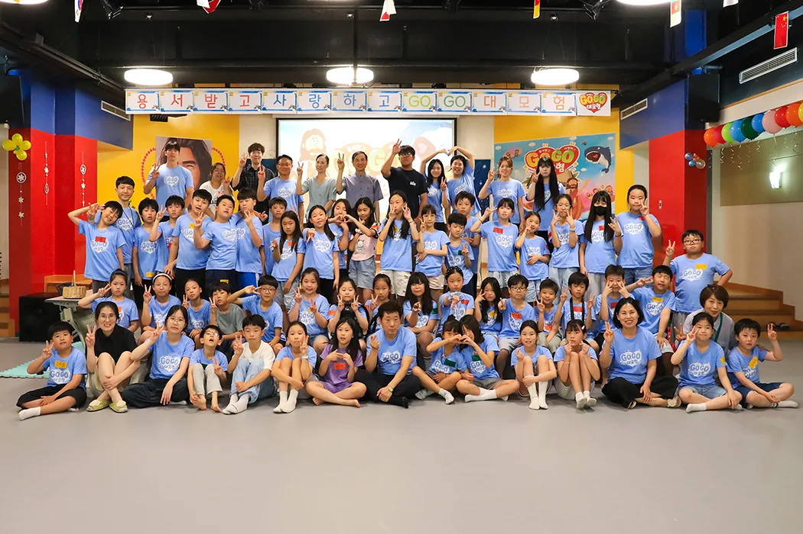
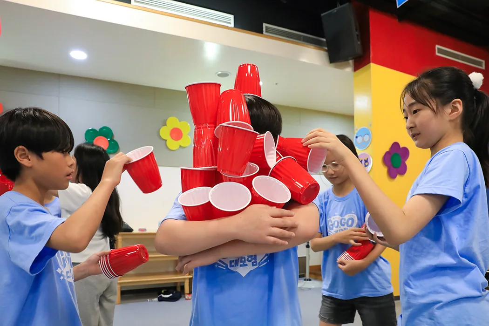
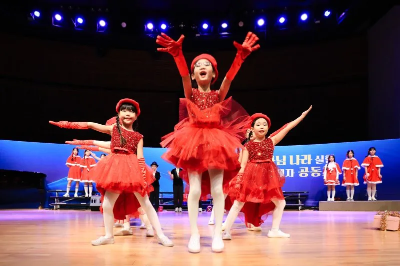
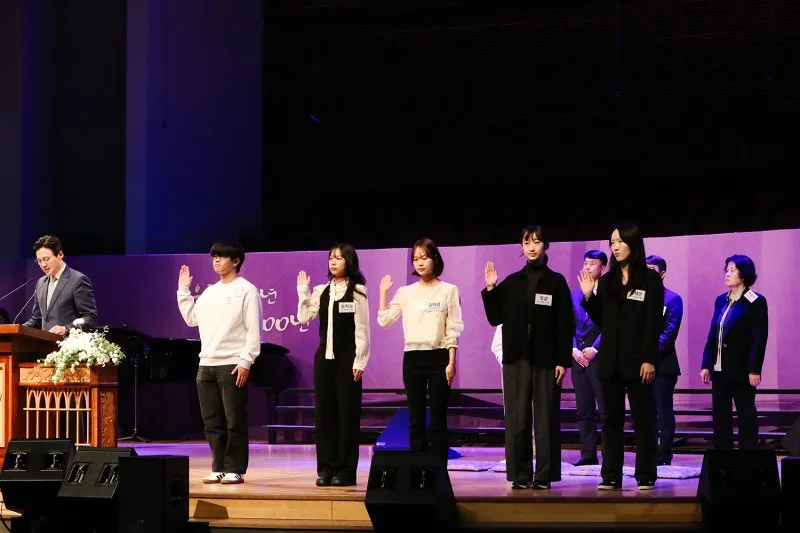
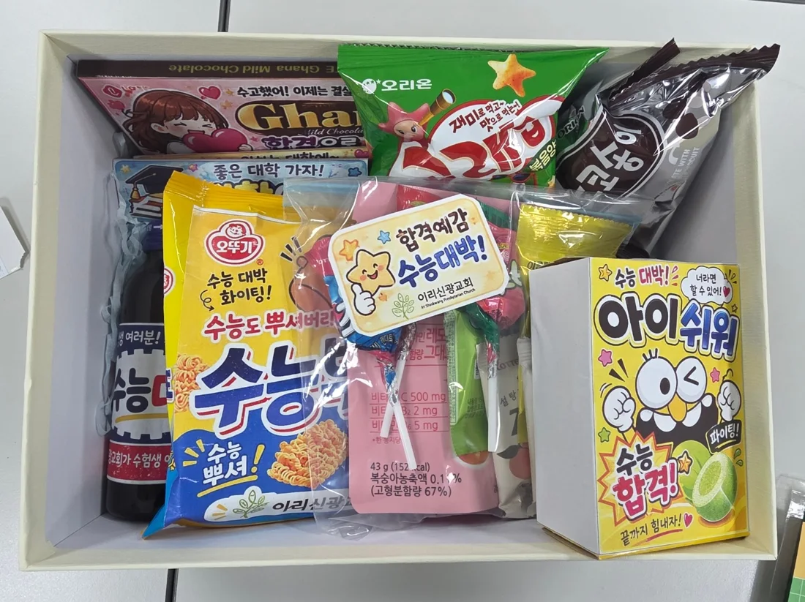
07 선교 100년
개척 초기부터 교회는 이웃 마을에 교회를 세우고, 바다 건너 선교사를 보냈습니다. 80주년을 맞아 교회는 ‘선교 100년’을 다음 스무 해의 이름으로 삼았습니다.
요르단우즈베키스탄남아공러시아몽골필리핀파라과이멕시코영국네팔미국캄보디아탄자니아브라질독일호주인도네시아아제르바이잔인도튀르키예싱가포르미얀마대만이스라엘방글라데시감비아베트남우간다키르기스스탄
“하나님이 이 땅에 이리신광교회를 세우신 목적이 무엇인가. 그것은 선교를 위해 교회가 존재한다는 분명한 목표입니다.”
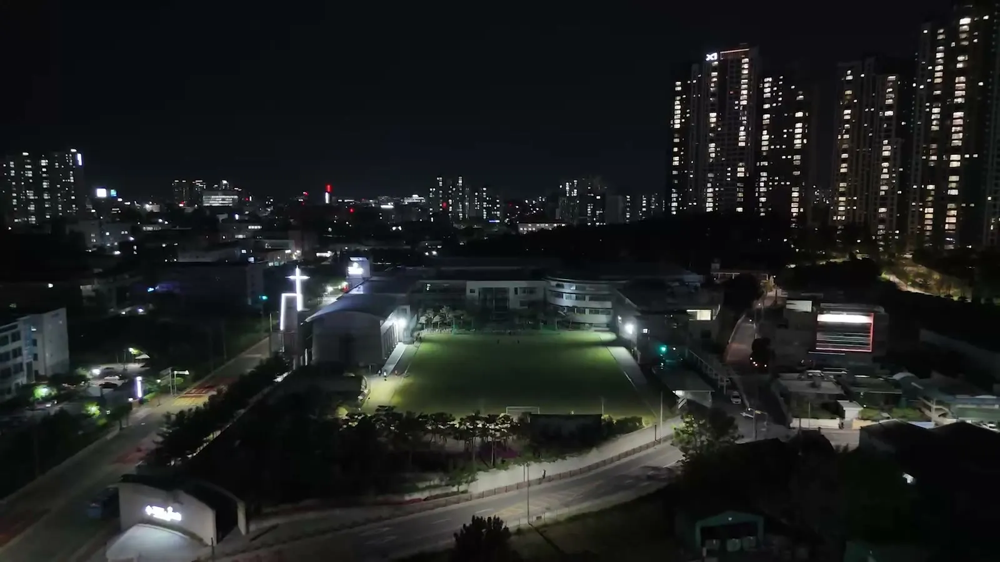
“따뜻하고 사랑이 넘치는 나의 집이에요.”
김경자 권사“나의 영원한 안식처죠.”
진의선 권사“제 신앙의 터전이죠.”
김홍국 장로“제 두 번째 집이 아닐까 생각합니다.”
임익성 집사“저에게 이리신광교회는 삶이에요.”
이연우 청년회장“여호와께서 여기까지 우리를 도우셨다”
사무엘상 7장 12절1946년부터 2026년까지, 이리신광교회 여든 해.
이제 새로운 100년을 향해 갑니다.